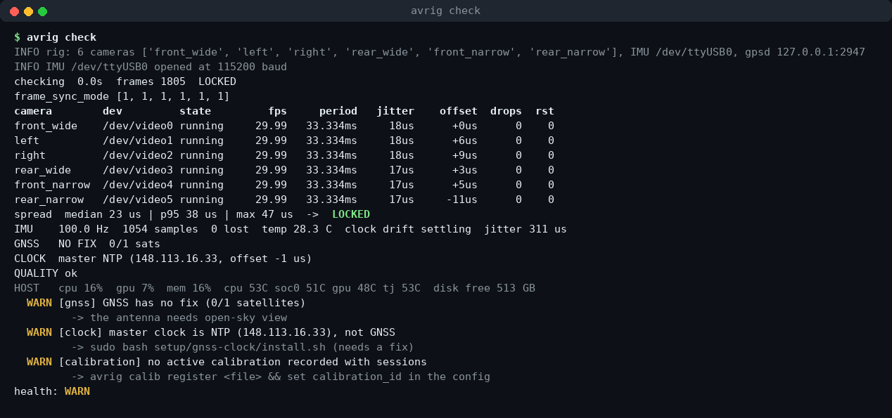

Install, boot, record
Argus runs on the rig itself. After a one-time setup, a normal day is two commands: avrig check to confirm the rig, and avrig gui (or the desktop icon) to record.
Hardware
| Component | Part | Notes |
|---|---|---|
| Compute | NVIDIA Jetson AGX Orin 64 GB Developer Kit | JetPack 7.2 / L4T R39.2.0, Ubuntu 24.04 (aarch64), kernel 6.8.12-tegra, Python 3.12, GStreamer 1.24 |
| Cameras | 6 × e-con STURDeCAM31 (Sony ISX031, 3 MP) | 1920×1536 UYVY at 30 fps; 4 wide (~128.7° horizontal), 2 narrow (~54°) |
| Deserializer | e-CAM_CUOAGX_DESER_8 | 2 × quad GMSL2, FAKRA; generates the frame-sync trigger |
| IMU | Xsens MTi-3 | 100 Hz over USB serial (FTDI) |
| GNSS | u-blox NEO-F9P | multi-band, served by gpsd |
| Optional | CAN transceiver, NTRIP account, GPIO LED | wheel speed / RTK / optical sync check and status LED |
The camera driver package comes from the camera vendor and is version-locked to both the L4T release and the kernel. It is not part of this repository; install the package that matches your L4T release first and confirm all six cameras enumerate:
v4l2-ctl --list-devices # expect six "vi-output, isx031 <bus>-<addr>" nodesInstall
Argus has no build step and no Python packaging: it runs from the source tree. The dependencies are the ones JetPack and Ubuntu already provide.
# system packages (most are already on a JetPack image)
sudo apt install python3-numpy python3-yaml python3-opencv python3-pyqt6 \
python3-gi gir1.2-gstreamer-1.0 gpsd gpsd-clients v4l-utils
# the application
git clone https://github.com/Sherin-SEF-AI/ArgusAV.git ~/ArgusAV
mkdir -p ~/.local/bin
ln -s ~/ArgusAV/bin/avrig ~/.local/bin/avrig
avrig --helpThe user needs to be in the video group (cameras), dialout (IMU serial port) and, for the LED features, gpio. TensorRT comes with JetPack and is only needed for the AV-lab tools.
Configuration lives in ~/.config/avrig.yaml. Every key is validated and unknown keys are rejected, so a typo cannot silently fall back to a default. All keys, defaults and comments are in avrig/config.py. Sessions go to ~/avrig-sessions/.
# ~/.config/avrig.yaml - a typical rig
out_dir: ~/avrig-sessions
require_frame_sync: true # preflight FAILs if sync is off
remote_enable: true # phone status page on the LAN
remote_token: change-me
mount_guard: true # default
gnss_interference: true # default; also run `avrig gnss --rf-enable` oncePerception models (optional, once)
The AV-lab tools use open-licence models that are downloaded, checksum-verified and compiled into TensorRT FP16 engines for this Jetson. About 750 MB of downloads and roughly 30 minutes of engine building, once:
avrig models --fetch --buildFrame sync at boot
Hardware frame sync is a per-camera driver setting (frame_sync_mode) that resets to 0 at every reboot. A rig that silently comes back unsynced looks perfect in every other way, so Argus installs a boot service that turns it on safely and checks the result:
sudo bash setup/avrig-install.sh --autostart
sudo reboot
# after the reboot, once:
journalctl -u avrig-boot -b --no-pager
avrig sync status # expect: frame_sync_mode [1, 1, 1, 1, 1, 1]The service (avrig-boot.service, runs as your user) waits up to 120 s for all six cameras, streams them free-running first (warm start), then enables sync and verifies the lock. If the lock fails it retries once; if it still fails, the rig is left free-running and preflight blocks recording until someone runs avrig sync on. Setting sync on cold sensors has left cameras with no signal at all on this hardware — see How it works — and a dead camera is worse than an unsynced rig that says so.
Without the service, run avrig sync on once after each boot.
What frame_sync_mode [1, 1, 1, 1, 1, 1] means
One number per camera, in the rig's camera order (front_wide, left, right, rear_wide, front_narrow, rear_narrow). 1 = the camera waits for the shared trigger, so all six expose together; 0 = that camera runs on its own clock and drifts out of step. The setting only says sync is switched on — avrig check proves it is actually locked.
Desktop shortcut
For an operator who should not need a terminal:
bash setup/install-desktop.sh # desktop icon + app-menu entry (no root)
bash setup/install-desktop.sh --removeThe icon starts bin/argus-launch, which runs avrig gui and, if the application cannot start (cameras busy, another instance running, a config error), shows the reason in a dialog instead of losing it.
Auto-login (optional). On a rig that lives in a vehicle, the desktop can log in by itself at boot (GDM): add AutomaticLoginEnable=true and AutomaticLogin=<user> to the [daemon] section of /etc/gdm3/custom.conf. Anyone who powers the rig on then gets the desktop; sudo still needs the password. Frame sync does not depend on a login — the boot service runs either way.
Every day
avrig check # 10 s of streaming: sync, drops, IMU, GNSS, clock, quality, host, health
avrig gui # or the desktop iconOnly one program can open the cameras. Close any other capture tool first; if hands-free mode is installed, sudo systemctl stop avrig-auto before opening the GUI.
Reading avrig check

avrig check on the bench: all six at 29.99 fps, LOCKED, 0 drops.frame_sync_mode [1, 1, 1, 1, 1, 1]
camera dev state fps period jitter offset drops rst
front_wide /dev/video0 running 29.99 33.334ms 17us +0us 0 0
left /dev/video1 running 29.99 33.334ms 17us +6us 0 0
right /dev/video2 running 29.99 33.334ms 17us +3us 0 0
rear_wide /dev/video3 running 29.99 33.334ms 17us -6us 0 0
front_narrow /dev/video4 running 29.99 33.334ms 16us +6us 0 0
rear_narrow /dev/video5 running 29.99 33.334ms 17us -4us 0 0
spread median 14 us | p95 38 us | max 40 us -> LOCKED
IMU 100.0 Hz 1032 samples 0 lost temp 28.2 C clock drift settling jitter 259 us
GNSS NO FIX 0/0 sats
CLOCK master NTP (offset +325 us)
QUALITY ok
HOST cpu 20% gpu 0% mem 9% cpu 50C soc0 47C gpu 45C tj 50C disk free 514 GB
WARN [gnss] GNSS has no fix (0/0 satellites)
-> the antenna needs open-sky view
WARN [clock] master clock is NTP, not GNSS
WARN [calibration] no active calibration recorded with sessions
health: WARN- fps / period / jitter
- From the driver's capture timestamps. Jitter is the per-frame deviation from the camera's own period: ~15–17 µs is the hardware's floor.
- offset
- Each camera's mean offset from the reference camera. With sync on: single-digit µs. Free-running: milliseconds to tens of milliseconds, and different after every restart.
- spread … LOCKED
- Spread of the six capture times of one frame set. LOCKED below 100 µs, DEGRADED below 300 µs, then PARTIAL / FREE-RUN.
- drops / rst
- Gaps in the driver's sequence numbers, and camera restarts by the supervisor.
- health
- OK, WARN or FAIL. A FAIL (sync off, a camera missing, disk low, overheating) blocks recording. The three WARNs above are expected on a bench indoors: no sky for GNSS, so time comes from NTP; and no camera calibration registered yet.
A first recording
- Open the GUI. The chip bar should be green or amber; red chips name what blocks recording.
- Info… — operator and vehicle are required; route, weather, light, road, tags and notes are optional. Pick lists come from
~/.config/avrig/presets.yaml. - Record. Preflight streams for a moment, measures the lock and health, and starts only if nothing FAILs.
- Mark events with 1–9 / F1–F9 or the marker buttons.
- Stop, then Sessions → Verify and Report.
From the terminal:
avrig record -t 600 --operator OP1 --vehicle VEH-01 --weather clear --light day
avrig verify ~/avrig-sessions/<session> --reportOptional root setup
All reversible, all in one script (sudo bash setup/avrig-install.sh --status shows what is installed):
| Option | Installs |
|---|---|
--autostart | avrig-boot.service: warm-start frame sync at boot (above) |
--collection-mode | A root helper that, while recording, runs jetson_clocks, pauses the Docker containers and stops the services you list, then restores exactly what it changed. Then collection_mode: true. |
--can --bitrate N --ifaces "can0" | Brings the CAN interfaces up at boot; then can_ifaces: [can0] |
--auto | avrig-auto.service: hands-free recording when the vehicle drives |
--depot | avrig-depot.timer: verified offload every 15 minutes when the destination is reachable |
--uninstall | Removes everything above |
The GNSS master clock (chrony disciplined from gpsd's SHM refclock) needs a GNSS fix and is a separate one-time step: sudo bash setup/gnss-clock/install.sh (it also installs udev rules that give the IMU a 1 ms FTDI latency timer); once active, the CLOCK chip turns green and clock.csv realtime becomes GNSS time.